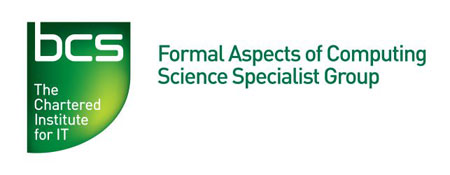

2013 Refinement Workshop at IFM 2013, Tue 11 June 2013
The 2013 Refinement Workshop will be co-located with IFM 2013 at Turku.
The programme for the 2013 Refinement Workshop is as follows:
- 10:30 coffee
- 11:00 Emil Sekerinski and Tian Zhang, "On a New Notion of Partial Refinement"
- 11:45 Brijesh Dongol and John Derrick, "Data refinement for true concurrency"
- 12:30 lunch
- 13:30 invited talk (joint with
Rodin workshop)
: Luigia Petre, Elena Troubitsyna, and Marina Waldén, "On Kaisa Sere's Contributions to the Refinement Research"
- 14:30 Michael Butler, John Colley, Andrew Edmunds, Neil Evans, Neil Grant, Helen Marshall and Colin Snook, "Modelling and Refinement in CODA"
- 15:15 tea
- 15:45 Frank Zeyda and Ana Cavalcanti, "Refining SCJ Mission Specifications into Parallel Handler Designs"
- 16:30 Nuno Amalio, "Relaxing Behavioural Inheritance"
- 17:15 Alexandre Madeira, Manuel A. Martins and Luis Barbosa, "Bisimilarity and refinement for hybrid(ised) logics"
For registration, please visit the workshop registration page or the
IFM 2013
registration page and tick the box for Refine 2013.
Proceedings have been published in EPTCS vol. 115.
Call for papers